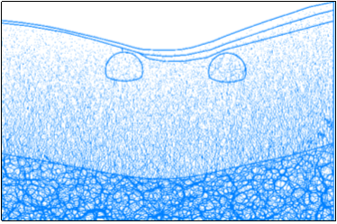

该段隧道定位在Y2SZK5地质钻孔处，主要岩层为风化页岩，上覆粉质粘土。
(1)初始模型
根据工程地质横断面图在CAD中等比例绘制隧道断面图，根据断面图等比例生成的杨梅一隧道出口段离散元模型如图1所示，地层从上到下主要为粉质黏土、中风化灰岩。图2给出了相关量测点位置信息，测量点顺序按照顺时针标记。
图1 初始模型
图2 测量圆分布
(2)力链分布及调整
隧道围岩强度普遍偏低，因此整体力链数值都是偏小，分布差异受重力影响较大，方向以竖直为主。左右两隧道皆位于风化程度较高岩体内，开挖后调整不明显，右侧隧道拱形力链调整。

图3 初始力链
图4 力链调整
(3)开挖过程应力调整及位移场
表1 初始地应力
量测点 | 水平应力/MPa | 垂直应力/MPa |
1 | 0.14 | 0.2 |
2 |
|
|
3 | 0.2 | 0.13 |
4 | 0.18 | 0.33 |
5 | 0.24 | 0.16 |
6 | 0.01 | 0.08 |
7 | 0.22 | 0.24 |
8 | 0.1 | 0.46 |
图5和图6给出了开挖过程中应力调整的具体信息，1号测量点水平应力在波动中先卸载后加载，竖直应力先加载后卸载。3号测量点水平应力卸载，竖直应力加载。4号测量点水平应力急剧加载，竖直应力急剧卸载。5号测量点水平应力缓慢加载，竖向应力加载。6号测量点水平应力缓慢增加，竖直应力缓慢卸载。7号测量点水平应力先卸载后加载，竖向应力急剧增加。8号测量点水平应力增加，竖向应力卸载。
图5 左侧隧道应力调整
图6 右侧隧道应力调整
图7 位移
从图7中可以看出，由于埋深较浅，岩层风化严重，因此扰动过程中容易发生坍塌，位移量较大，但是在支护作用下变形可以稳定。